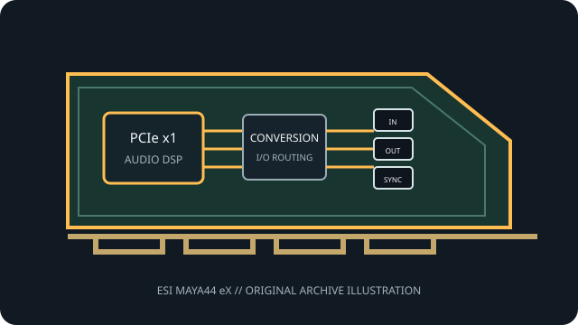

[ PROFESSIONAL AUDIO // PCIe ADD-IN ]
ESI MAYA44 eX
An ESI PCIe recording interface combining stereo line capture/playback, microphone and instrument inputs, and optical digital I/O.

MODEL SCOPE: ESI MAYA44 eX. PCIe 4-in/4-out recording interface with 24-bit/96 kHz conversion, mic/instrument input and optical S/PDIF. Confirm PCB/IS revision, accessories, slot wiring and current vendor driver before installation.
Model-specific specifications
| Model-specific SKU | ESI MAYA44 eX |
|---|---|
| Host interface / lanes | PCI Express x1 audio interface card. |
| Codec / conversion | 24-bit/96 kHz A/D (102 dB(A) stated dynamic range) and D/A (108 dB(A)); ESI does not publish converter IC part numbers on the cited product page. |
| Analog I/O | Two stereo line inputs and two stereo line outputs; microphone preamp with +48 V phantom power, Hi-Z instrument input and headphone output. Four simultaneous input/output channels are supported. |
| Digital I/O / protocols | Optical S/PDIF input and output. |
| Resolution / sample rates | 24-bit, up to 96 kHz; ESI quotes 102 dB(A) A/D and 108 dB(A) D/A dynamic range. |
| Latency / monitoring | ESI calls the EWDM driver low-latency and provides ASIO 2.0, WDM, DirectSound and MME paths; no fixed buffer/round-trip figure is stated on the product page. |
| Driver / OS compatibility | EWDM drivers. ESI lists Windows Vista/7/8/8.1/10/11 (32/64-bit) and Mac OS X compatibility; check current downloadable package and host support before installation. |
Compatibility & preservation
Do not assume the separately labeled mic, Hi-Z, line, headphone and S/PDIF paths share the same gain or channel mapping. Phantom power applies to the microphone input; check levels before connecting equipment.
- Photograph the card label, PCB revision, rear connectors and included breakout cables before service.
- Retain the exact working driver, firmware, operating-system version, clock and routing configuration.
- Confirm lane wiring, bracket clearance, channel map and external converter/network compatibility; connector fit alone is not a compatibility guarantee.
Manufacturer sources
- ESI MAYA44 eX — manufacturer specificationsManufacturer documentation for this model, driver family or revision.
- ESI MAYA44 eX — official drivers and documentationManufacturer documentation for this model, driver family or revision.